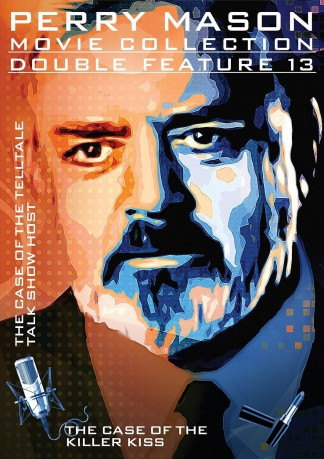

#6649 Perry Mason und der Kuß des Todes
Alternativ: Perry Mason: The Case of the Killer Kiss
 
 IMDB-Wertung: 7.1 / 10
IMDB-Wertung: 7.1 / 10  Metascore: 0
Metascore: 0 
On the set of a popular daytime soap opera 'Mile High', actress Kris Buckner is being forced off by co-star Mark Stratton. When she says that she'll 'kill him before she leaves the show', she makes herself the prime suspect when Stratton is murdered by someone poisoning him. As an old friend, Perry Mason comes to the help of Kris and agrees to defend her. Meanwhile Ken goes in search of information with the help of fan of the show.
Jahr: 1993
Dauer: 90 Minuten
FSK:
Land: USA Studio: NBCTonspuren: DD5.1 - ,
Untertitel:
Auflösung: 1080p (1440x1080) Größe: 3563 MB
Genre: Drama, Krimi, Mystery
Regisseur: Christian I. Nyby II
Drehbuch: Gerry Conway
Soundtrack:
Darsteller:
 Raymond Burr als Perry Mason
Raymond Burr als Perry Mason Barbara Hale als Della Street
Barbara Hale als Della Street William R. Moses als Ken Malansky
William R. Moses als Ken Malansky- Stuart Damon als Alex Straub
- Linda Dano als Sandra Drake
- Genie Francis als Kris Buckner
- Richard Grove als Jim Watson
- Sean Kanan als Mark Stratton
- Christian Jules Le Blanc als Sheriff
 James McEachin als Lt Brock
James McEachin als Lt Brock- Karen Moncrieff als Mimi Hoyle
 Richard Riehle als Mort Aberdine
Richard Riehle als Mort Aberdine- Arleen Sorkin als Peg Ferman
- Pat Finley als Judge Andrea Nachman
- Jamie Horton als Mike Winter
- Mark Boudler als Officer Jolly , uncredited
- Charles Macaulay als District Attorney Markham
- Krista Tesreau als Charlotte Grant
- Michael Tylo als Evan King
- Hal Harrison als Businessman
- Vern Porter als Gas Jockey
- Jan Waterman als Wardrobe Girl
- Wendelin Harston als Ticket Clerk
- David Richards als Director / Milt
- Greg Moody als Jack Lester
- Kurt Soderstrom als Guard
- Rich Beall als Janitor
- Bill Greene als Eddie , uncredited
Datei: X:\Person\Perry Mason\Perry Mason und der Kuß des Todes (1993, FSK, 1440x1080).mkv seit 28.07.2017
Festplatte: HD Collection-7+mehr(A-Z)+Person
 Es gibt insgesamt 20 Filme in der Gruppe 'Person\Perry Mason'
Es gibt insgesamt 20 Filme in der Gruppe 'Person\Perry Mason'